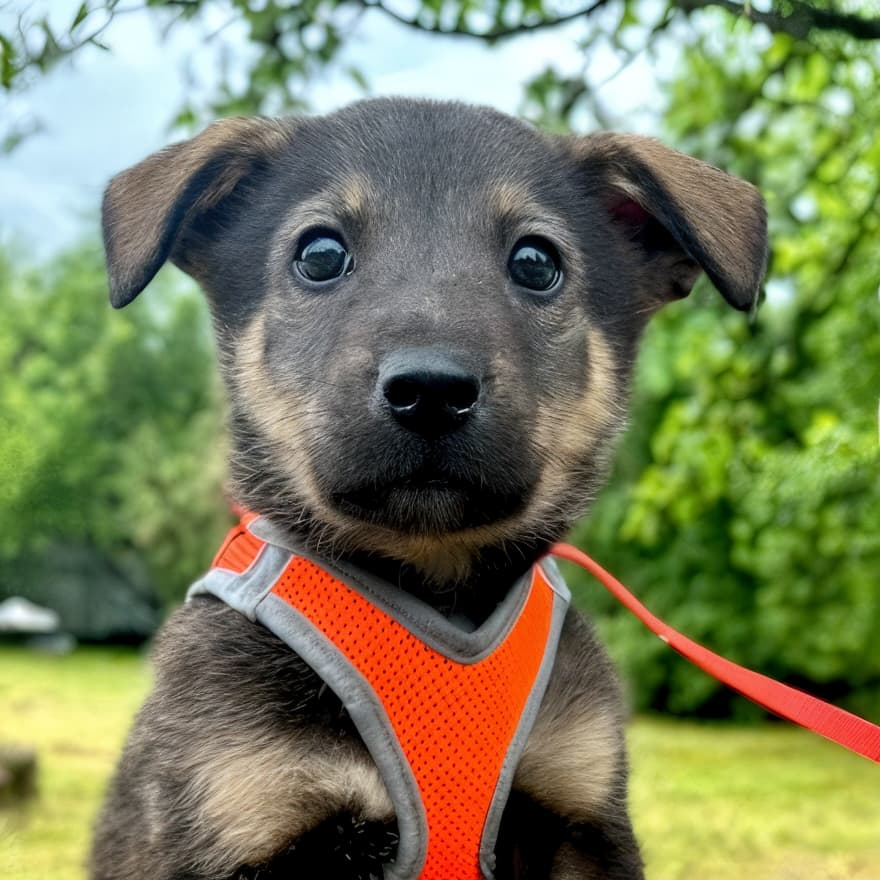
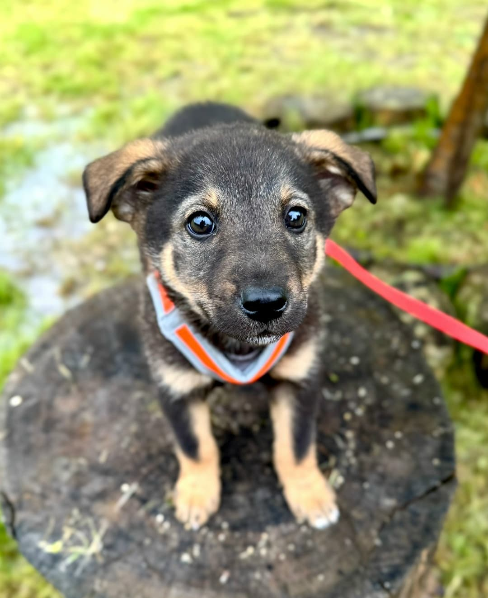
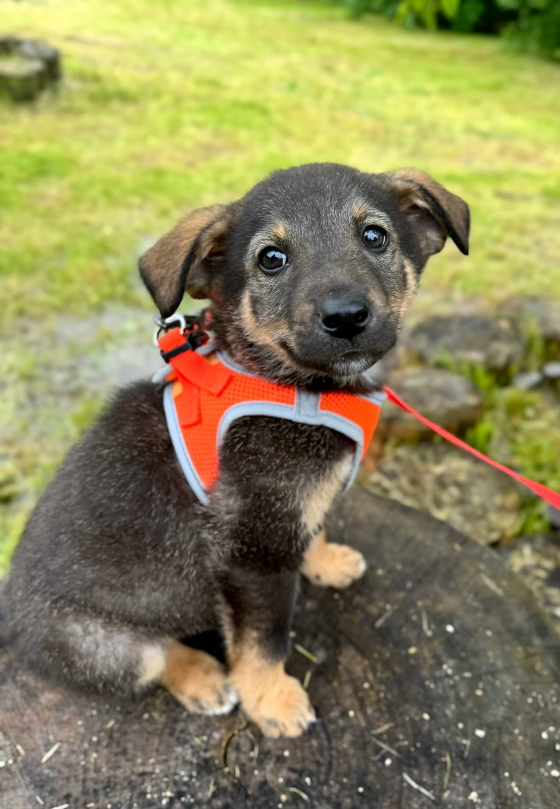
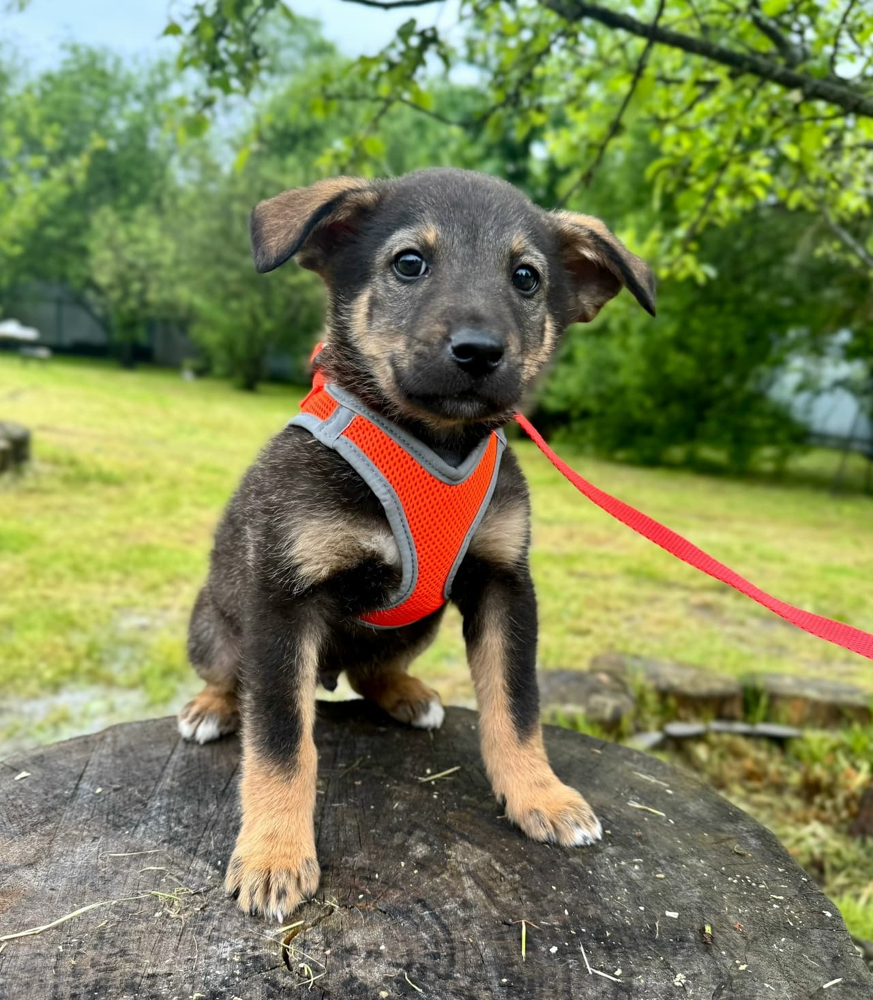
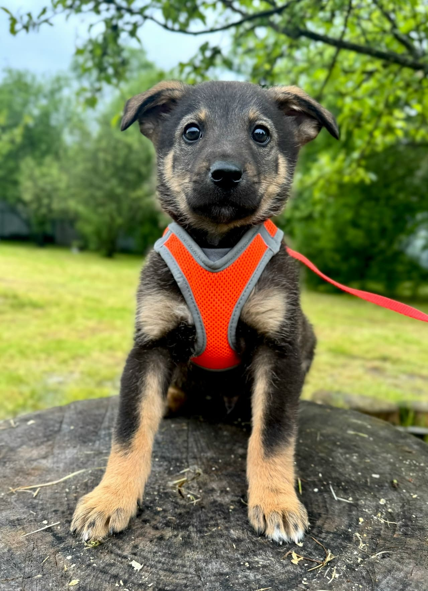
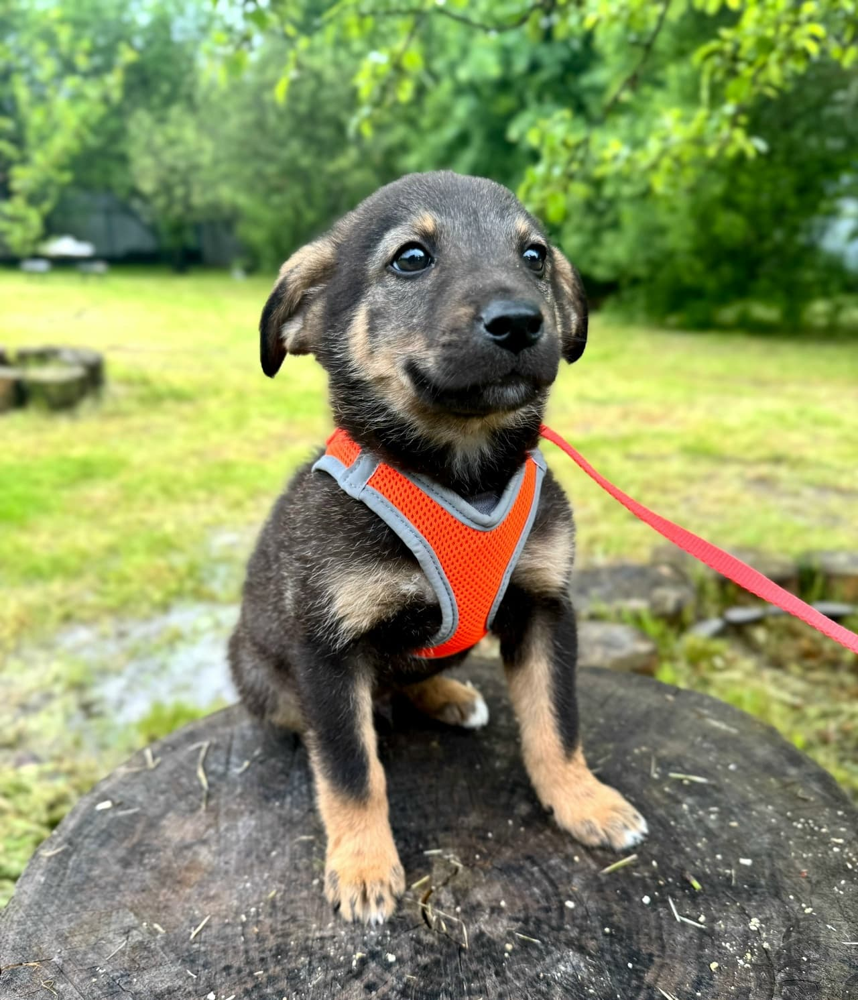
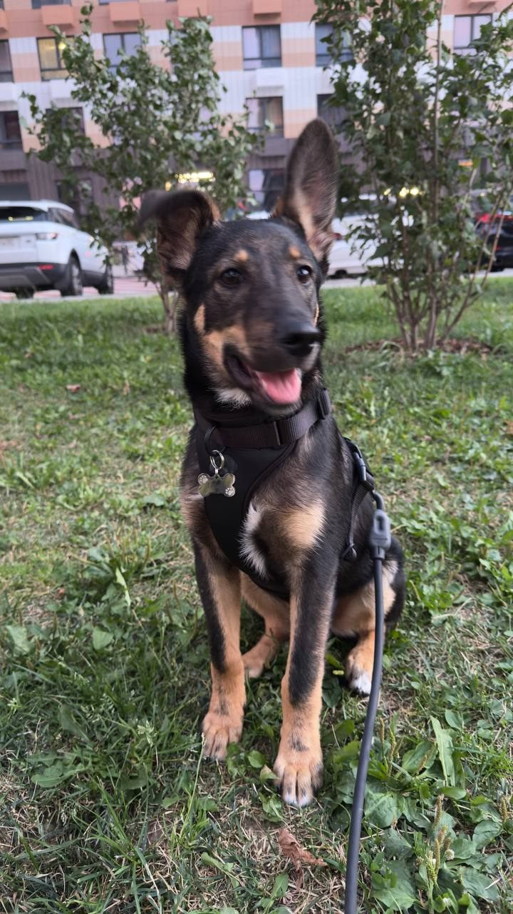
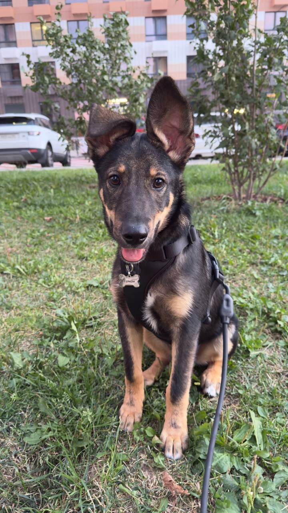
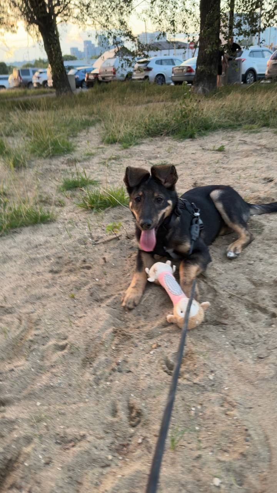

Ушки-конвертики
Большие, мягкие, чуть смешные — и невероятно обаятельные. Такие уши не могут не растопить сердце.
Приют «Зов предков» · Москва и область
Ему 4 месяца: ласковый, игривый, с большими ушками-конвертиками. Он уже пережил немало — и теперь очень ждёт встречи со своим человеком.

Знакомьтесь
Большие, мягкие, чуть смешные — и невероятно обаятельные. Такие уши не могут не растопить сердце.
Обожает людей, льнёт к рукам, доверяет с первого взгляда. Ему очень нужен свой человек — вы.
Энергии хватит на двоих: игры, прогулки, обнимашки. С Тимоном не соскучишься — ни вам, ни ему.
Идеальный первый друг для семьи: контактный, доверчивый и очень благодарный за заботу.

Его история
Тимон и его сестрёнка появились на свет в заброшенном ангаре — без мамы, без тепла, без шансов. Их нашли волонтёры приюта «Зов предков»: накормили, вылечили, окружили заботой.
Сестрёнка Тимона уже нашла свой дом. Теперь Тимон очень ждёт, что однажды за ним приедет именно его человек — вы.
Каждый день он встречает гостей приюта у вольера — вдруг это они?
Фотоальбом
Он уже подрос с тех пор, как попал в приют: уши встали, лапы вытянулись, а характер стал ещё ярче.







Он растёт с каждым днём — и ждёт именно вас.
Всё готово
Как забрать Тимона
Вика или Ольга расскажут о Тимоне подробнее, ответят на вопросы и договорятся о встрече.
Приют «Зов предков»: Московская область, Одинцовский район, посёлок Большие Вязёмы — 30 км от МКАД по Можайскому шоссе. Лучше предварительно позвонить и договориться о времени.
Заключаем договор — и привозим Тимона прямо к вам. Дальше начинается самое приятное: долгая и счастливая совместная жизнь.
Один звонок
Один звонок может изменить его жизнь. А вместе с ней — и вашу.
Информация о приюте
«Зов предков» — частный приют для бездомных животных (Московская область, Одинцовский район). Цель этой кампании — найти семью щенку Тимону. Животные передаются в семьи бесплатно, по договору, только в Москву и Московскую область. Пристройство, а не продажа.
РБОФ «ССБЖ „Зов предков"» — Региональный благотворительный общественный фонд содействия спасению бездомных животных «Зов предков»
Фонд существует на добровольные пожертвования; животные передаются в семьи бесплатно — пристройство, а не продажа.